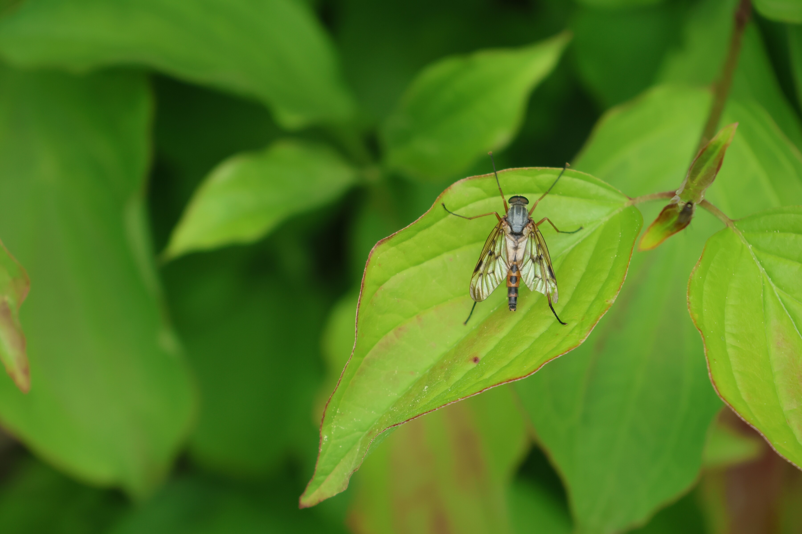
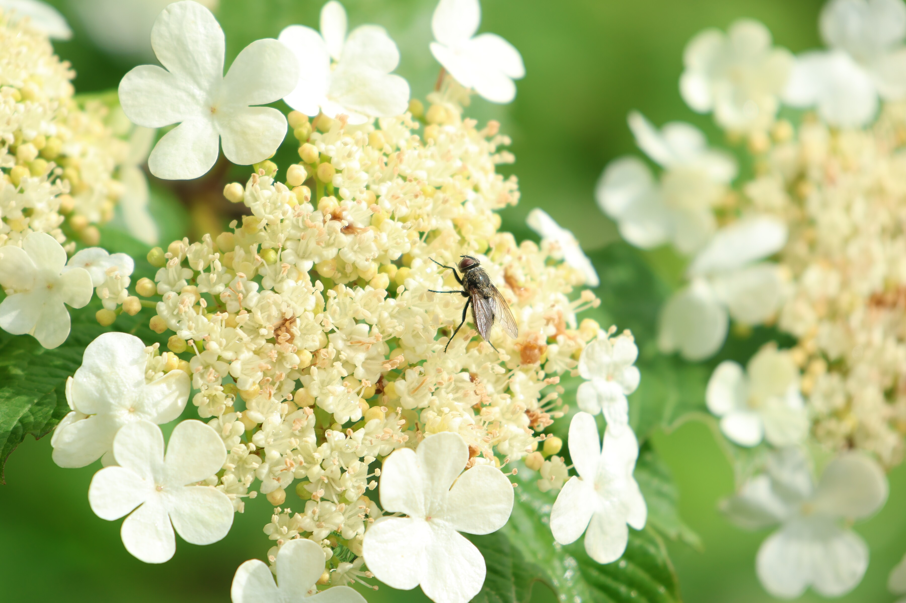
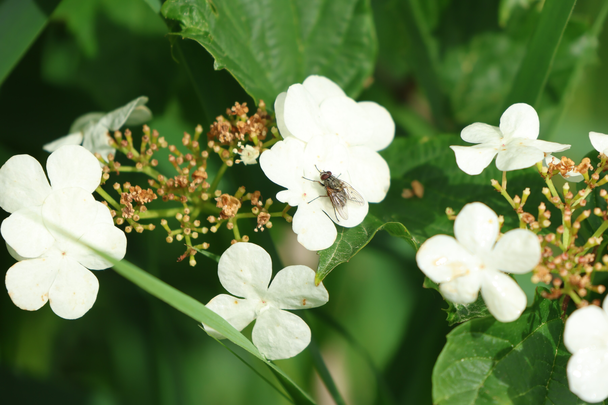
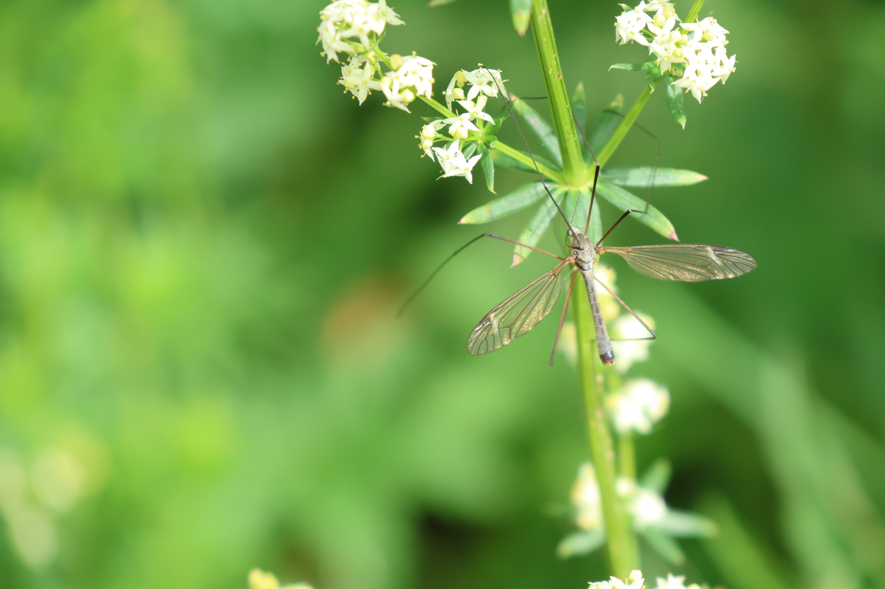
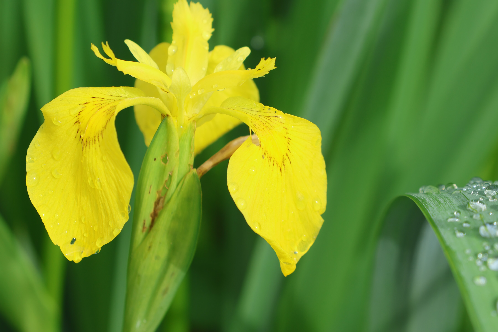
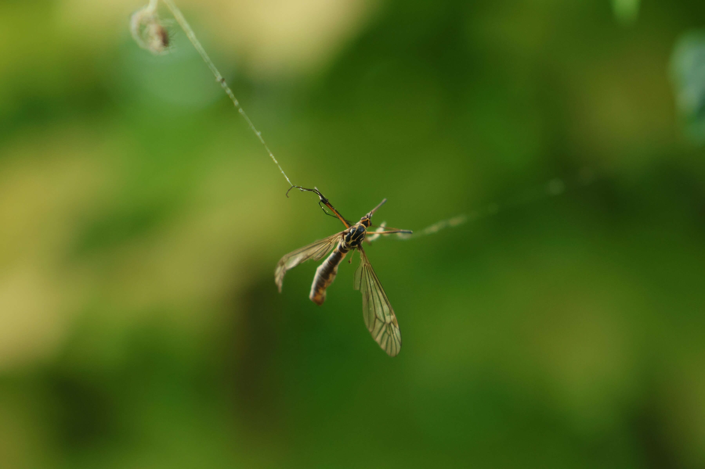
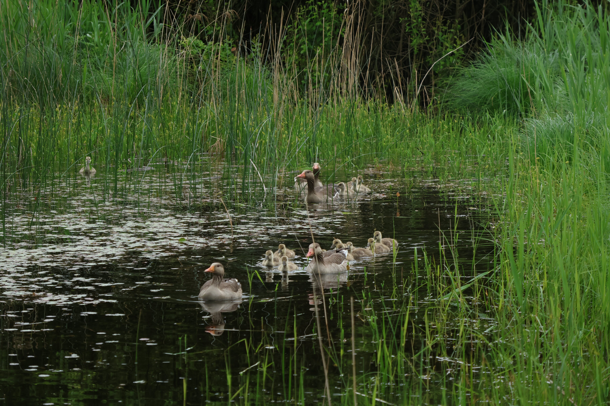
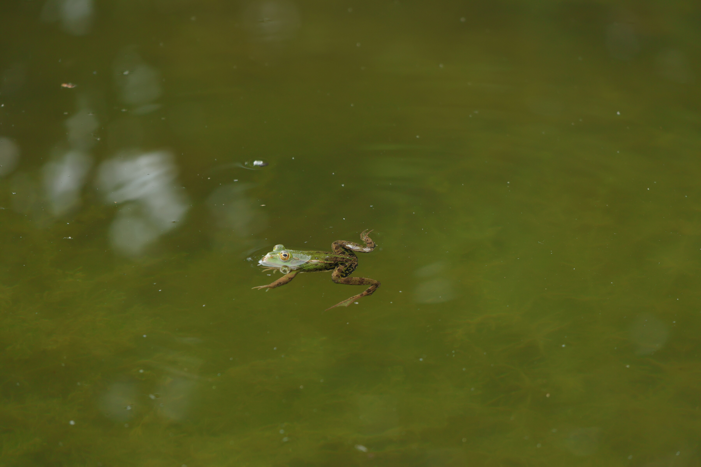

Macro shots from a pond near Uznach: flies, a dragonfly, a dying wasp, and a goose family that wouldn't sit still.
Macro






Pond wildlife


Uznach · May 2026
May 14, 2026
Macro shots from a pond near Uznach: flies, a dragonfly, a dying wasp, and a goose family that wouldn't sit still.







